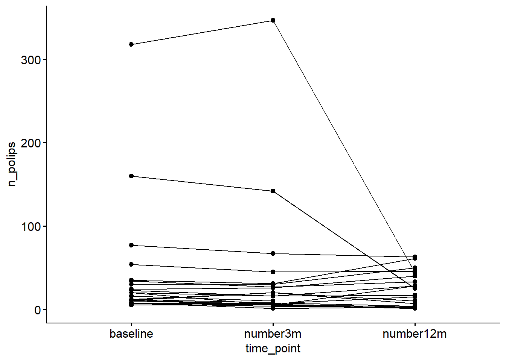
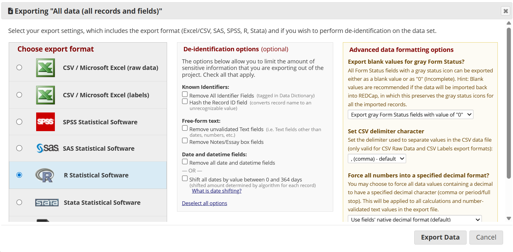
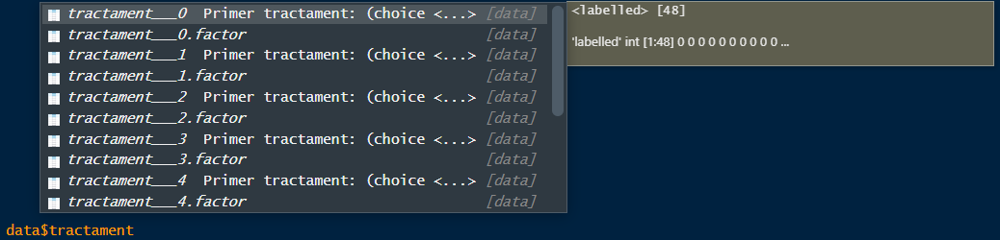

Sessió 2 Importació i manipulació de dades amb R
Objectius de la sessió
Importar dades de diferents formats
Manipular datasets: transformar i seleccionar variables, filtrar files…
Conèixer funcions bàsiques d’R
Utilitzar funcions del tidyverse
A la sessió anterior vam veure com assignar valors a un objecte mitjançant <-. Els objectes poden contenir un únic valor, com per exemple objecte_a <- 12.3 o bé poden ser conjunts de valors.
Aquests conjunts de valors poden pendre diferents formes:
vectors
factors
data frames
matrius
llistes
2.1 Vectors
Els vectors són conjunts de valors, numèrics, caràcters o lògics, que es creen amb la funció c()
## [1] 1 2 3## [1] 1 2 3## [1] "numeric"## [1] "Bon" "dia"## [1] "character"## [1] TRUE FALSE TRUE TRUE FALSE FALSE## [1] "logical"També es poden assignar noms als valors del vector
## a b c
## 1 2 3## [1] "a" "b" "c"Els claudators [ ] permeten accedir (cridar) elements de dins del vector de manera individual mitjançant l’estructura: nom_vector["nom_element"] o bé nom_vector["num_posicio"]
## c
## 3## c
## 3Per cercar dins dels vectors i trobar els elements que compleixen una determinada condició, podem aplicar operacions lògiques mitjançant <, <=, >, >=, != i ==
- Operació lògica amb una sola condició:
## b
## 2## a
## 1## c
## 3## b c
## 2 3## a c
## 1 3- operació lògica amb dues (o més) condicions:
# per indicar que es compleixin totes les condicions: &
vec01[vec01<3 & vec01>1] # s'ha de complir la 1ra condició i la 2na## b
## 2# per indicar que es compleixi almenys una de les condicions: |
vec01[vec01<3 | vec01>1] # s'ha de complir la 1ra condició i/o la 2na## a b c
## 1 2 3La funció which() retorna la posició del vector que compleix la condició especificada:
vec04 <- c(1:5, 13, 17, 20, 25) # crea un vector amb els valors de l'1 al 5 (1:5), 13, 17, 20 i 25
vec04[vec04>5] # valors de vec04 que són més grans de 5## [1] 13 17 20 25## [1] 6 7 8 9Treballar amb índex de posicions és útil quan s’han de gestionar vectors grans.
Amb els vectors també podem fer operacions matemàtiques més o menys complexes:
## a b c
## 2 4 6Exercicis
- Crea un vector de valors del 5 al 10
Solució
## [1] 5 6 7 8 9 10## [1] 5 6 7 8 9 10
- Crea un vector dels noms dels gens PAX6,ZIC2,OCT4 i SOX2. Quin tipus de vector és?
Solució
gene_names <- c("PAX6","ZIC2","OCT4", "SOX2")
class(gene_names) # és un vector de caràcters (character vector)## [1] "character"
- Crea un vector, anomenat
x, amb les abundàncies (counts) dels gens següents: PAX6 = 5, ZIC2 = 1, OCT4 = 3, SOX2 = 10. Un cop creat divideix el vector per la suma total de les abundàncies dels quatre gens (anomenax_rela aquest segon vector) per obtenir les abundàncies relatives. Finalment, troba el(s) gen(s) amb una abundància relativa superior a 0.1.
Solució
## PAX6 ZIC2 OCT4 SOX2
## 5 1 3 10## [1] 19## PAX6 ZIC2 OCT4 SOX2
## 0.26315789 0.05263158 0.15789474 0.52631579## PAX6 OCT4 SOX2
## 0.2631579 0.1578947 0.52631582.2 Factors
Els factors són una sèrie de valors de tipus character amb uns nivells o categories (levels) definits. Cada nivell se li pot assignar una etiqueta específica.
Els factors es creen utilitzant la funció factor.
## [1] "character"## [1] "factor"## [1] a b b
## Levels: a bEls nivells o categories (levels) del factor estan ben definides, i per tant, no podem afegir valors al factor que no estiguin dins dels nivells
## Warning in `[<-.factor`(`*tmp*`, 4, value = "j"): invalid factor level, NA
## generatedTreballar amb factors és molt útil quan hi ha variables categòriques però estan codificades amb números. Per exemple, el Sexe pot estar codificat amb 0 per masculí i 1 per femení:
## [1] 0 0 1 1 1 1 0 0 1 0 0 0## [1] "numeric"En aquest cas, podem definir que tots els 0 corresponguin al sexe masculí i els 1 al sexe femení:
s_ft <- factor(s, # vector original (on hi ha la informació de la variable)
levels = c(0,1), # codificació numèrica de la variable
labels = c("M", "F")) # etiquetes de cada un dels nivells/categories
s_ft## [1] M M F F F F M M F M M M
## Levels: M F## [1] "factor"L’ordre amb el qual especifiquem levels i labels ha de coincidir.
s_ft2 <- factor(s,
levels = c(1,0), # ordre del nivells ha de coincidir amb l'odre de les etiquetes
labels = c("F", "M"))
s_ft2## [1] M M F F F F M M F M M M
## Levels: F MUna funció molt útil quan s’analitzen variables factor és table(). Aquesta funció retorna el recompte d’observacions que hi ha de cada categoria:
## s_ft
## M F
## 7 5## s_ft
## M F
## 0.5833333 0.4166667## s_ft
## M F
## 58.33333 41.66667Per arrodonir a l’enter més proper utilitza la funció round():
## s_ft
## M F
## 58 42També pots definir la quantiat de decimals que desitgis amb l’argument digits =:
## s_ft
## M F
## 58.333 41.667Exercicis
S’ha analitzat el nivell de dolor de 10 pacients amb ferides cròniques. La variable dolor té tres categories que han estat definides de la següent manera: lleu (1), moderat (2), alt (3). Escriu les següents línies de codi per obtenir les dades de dolor d’aquest estudi:
- Converteix a factor la variable dolor definint les categories segons s’especifica a l’enunciat.
Solució
## [1] alt alt alt moderat alt moderat moderat moderat alt
## [10] lleu moderat moderat
## Levels: lleu moderat alt## [1] "factor"
- Quantes observacions hi ha de cada categoria?
Solució
## dolor_ft
## lleu moderat alt
## 1 6 5## dolor_ft
## lleu moderat alt
## 0.08333333 0.50000000 0.41666667## dolor_ft
## lleu moderat alt
## 8.333333 50.000000 41.666667
- Canvia l’ordre de les categories de major a menor dolor.
Solució
# (a) canviar l'ordre dels nivells i de les etiquetes al crear al vector
dolor_ft2 <- factor(dolor, levels = c(1,2,3), labels = c("lleu", "moderat", "alt"))
dolor_ft2## [1] alt alt alt moderat alt moderat moderat moderat alt
## [10] lleu moderat moderat
## Levels: lleu moderat alt# (b) definir l'ordre dels nivells desitjat (a partir del factor ja creat, dolor_fct)
dolor_ft2 <- factor(dolor_ft, levels = c("alt", "moderat", "lleu"))
dolor_ft2## [1] alt alt alt moderat alt moderat moderat moderat alt
## [10] lleu moderat moderat
## Levels: alt moderat lleu2.3 Data frames
Ja hem vist a la sessió anterior que els data frames són taules rectangulars formades per columnes (normalment variables) i files (observacions).
Els podem importar a R des d’un paquet, un full d’excel o bé crear-los directament a R amb la funció data.frame() (sempre i quan les dimensions de les dades ens ho permetin!). Hi ha diferents maneres de crear data frames, a continuació es mostra una d’elles:
# Creem les diferents columnes per separat en forma de vector:
chr <- c("chr1", "chr1", "chr2")
strand <- c("-","+","+")
start<- c(200,4000,100)
end<-c(250,410,200)
#Utilitzem la funció data.frame() per unir les diferents columnes (vectors)
df <- data.frame(chr,start,end,strand)
class(df)## [1] "data.frame"## 'data.frame': 3 obs. of 4 variables:
## $ chr : chr "chr1" "chr1" "chr2"
## $ start : num 200 4000 100
## $ end : num 250 410 200
## $ strand: chr "-" "+" "+"La funció str() indica l’estructura de cada una de les columnes del data frame. Permet comprovar que cada variable s’ha llegit de manera correcte.
Podem canviar els noms de les columnes i de les files al data frame:
## [1] "chr" "start" "end" "strand"colnames(df) <- c("Chromosome", "Start", "End", "Strand") # assigna valors concrets als noms de les columnes
colnames(df)## [1] "Chromosome" "Start" "End" "Strand"## [1] "1" "2" "3"Per saber les dimensions del data frame utilitzem la funció dim() i pel nombre de columnes i files ncol() i nrow()
## [1] 3 4## [1] 4## [1] 3Similar als vectors, també podem accedir a columnes, files o cel·les concretes d’un data frame.
Pel que fa a les columnes, hi ha diferents maneres de fer-ho utilitzant funcions base d’R:
- Utilitzant
[]i indicant la posició de la columna després de la coma
## [1] "chr1" "chr1" "chr2"## Chromosome Strand
## sample01 chr1 -
## sample02 chr1 +
## sample03 chr2 +- Utilitzant
[]i indicant el nom exacte de la columna després de la coma
## [1] "chr1" "chr1" "chr2"## Chromosome Strand
## sample01 chr1 -
## sample02 chr1 +
## sample03 chr2 +- Utilitzant
$i indicant el nom exacte de la columna (sense cometes!). Aquesta alternativa no permet seleccionar més d’una columna.
## [1] "chr1" "chr1" "chr2"## [1] "-" "+" "+"Per accedir a les files s’utilitza [ ] i indicant la posició de la fila/observació abans de la coma
## Chromosome Start End Strand
## sample02 chr1 4000 410 +## Chromosome Start End Strand
## sample02 chr1 4000 410 +
## sample03 chr2 100 200 +Recorda que la primera posició (bans de la coma) fa raferència a les files, i la segona posició (després de la coma) a les columnes. Quan l’espai d’abans/després de la coma es deixa en blanc s’estan seleccionant totes les files/columnes.
Exercicis
Continuant amb l’estudi de les ferides cròniques, crea un data frame amb les variables edat i mida de la ferida dels 10 pacients analitzats. Escriu les següents línies de codi per obtenir les d’aquestes dues variables
- Crea un data frame amb les variables
dolor_ft,edat,mida
Solució
## dolor edat mida
## 1 alt 60 2.5
## 2 alt 44 2.5
## 3 alt 43 0.5
## 4 moderat 32 3.5
## 5 alt 71 0.5
## 6 moderat 72 0.5
## 7 moderat 66 0.5
## 8 moderat 43 2.5
## 9 alt 54 3.5
## 10 lleu 55 1.5
## 11 moderat 56 2.5
## 12 moderat 34 1.5
- Visualitza la segona columna del data frame
Solució
## [1] 60 44 43 32 71 72 66 43 54 55 56 34## [1] 60 44 43 32 71 72 66 43 54 55 56 34## [1] 60 44 43 32 71 72 66 43 54 55 56 34
- Visualitza els valors de nivell de
dolorimidade la ferida de la cinquena mostra
Solució
## dolor mida
## 5 alt 0.5## dolor mida
## 5 alt 0.5## [1] alt
## Levels: lleu moderat alt## [1] 0.5
- Identifica on hi ha l’error a les següents línies de codi i corregeix-lo
# error 1
df2[, (2,3)]
# error 2
df2[, "Mida"]
# error 3
df2$"mida"Solució
# error 1
df2[, c(2,3)] # si volem seleccionar més d'una variable ho hem d'introduir en forma de vector, c()## edat mida
## 1 60 2.5
## 2 44 2.5
## 3 43 0.5
## 4 32 3.5
## 5 71 0.5
## 6 72 0.5
## 7 66 0.5
## 8 43 2.5
## 9 54 3.5
## 10 55 1.5
## 11 56 2.5
## 12 34 1.5## [1] 2.5 2.5 0.5 3.5 0.5 0.5 0.5 2.5 3.5 1.5 2.5 1.5## [1] 2.5 2.5 0.5 3.5 0.5 0.5 0.5 2.5 3.5 1.5 2.5 1.52.4 Matrius
Similars als data frames, les matrius també són un conjunt de dades, però del mateix tipus, que es disposen en una organització rectangular bidimensional. Es crea mitjançant una entrada vectorial i té un nombre fix de files i columnes.
# Exemple de matriu de dues files i tres columnes
mat <- matrix(c(11,22,33,44,55,66), # vector amb totes les dades
nrow = 2, # defineix el nombre de files
ncol = 3, # defineix el nombre de columnes
byrow = 1 # defineix com volem que s'ompli la matriu: en aquest cas per files
)
mat## [,1] [,2] [,3]
## [1,] 11 22 33
## [2,] 44 55 66## [1] "matrix" "array"## num [1:2, 1:3] 11 44 22 55 33 66Tant les matrius com els data frames són taules rectangulars de dades, però les seves diferències principals són:
Les matrius tenen un nombre fix de files columnes, mentre que en els data frames és variable
En les matrius, les dades només poden ser d’un sol tipus, mentre que els data frames poden combinar columnes amb diferents tipologies de dades (numèric, factor, lògic…)
2.5 Llistes
Són els objectes d’R que contenen elements de diferents tipus com ara números, vectors, data frames, i inclús altres llistes al seu interior. Una llista també pot contenir una matriu o una funció com a elements.
La funció list() permet crear llistes:
## [[1]]
## [1] "hola"
##
## [[2]]
## [1] 1 2 3 4 5
##
## [[3]]
## [1] TRUE
##
## [[4]]
## [1] 2025Podem accedir als diferents elements de la llista mitjançant [], indicant la posició de l’element. Els elements de la llista poden rebre noms i, per tant, també hi podem accedir mitjançant els seus noms.
## [[1]]
## [1] "hola"## [1] "hola"2.5.1 Exercicis
- Crea una llista amb noms que contingui: (1) un vector numèric, (2) un factor, (3) una llista amb un character, un integer, i un valor lògic.
Solució
# (1) un vector numèric
vec_numeric <- c(1:10)
# (2) un factor
fct <- factor(c("sol", "pluja"))
# (3) una llista amb un character, un integer, i un valor lògic.
llista0 <- list("temps", 5, TRUE)
# Creem la llista amb noms
llista_final <- list(
vector_numeric = vec_numeric,
factor_temps = fct,
llista_interna = llista0
)
llista_final## $vector_numeric
## [1] 1 2 3 4 5 6 7 8 9 10
##
## $factor_temps
## [1] sol pluja
## Levels: pluja sol
##
## $llista_interna
## $llista_interna[[1]]
## [1] "temps"
##
## $llista_interna[[2]]
## [1] 5
##
## $llista_interna[[3]]
## [1] TRUE
- Accedeix al integer dins de la llista interna (3)
2.6 Organització de les dades
Fins ara hem pogut treballar amb funcions base d’R, però a partir d’ara ens farà falta un paquet anomenat tidyverse(). Per tant, primer de tot l’instal·lem i el carreguem:
Una de les fases més importants, i segurament a la que hi hauràs de dedicar més temps, és l’organització de les dades. En el següent exemple, les tres taules contenen la mateixa informació però es troben organitzades molt diferent. Les variables descrites són: país, any, població i nombre de casos de tuberculosi.
## # A tibble: 6 × 4
## country year cases population
## <chr> <dbl> <dbl> <dbl>
## 1 Afghanistan 1999 745 19987071
## 2 Afghanistan 2000 2666 20595360
## 3 Brazil 1999 37737 172006362
## 4 Brazil 2000 80488 174504898
## 5 China 1999 212258 1272915272
## 6 China 2000 213766 1280428583## # A tibble: 12 × 4
## country year type count
## <chr> <dbl> <chr> <dbl>
## 1 Afghanistan 1999 cases 745
## 2 Afghanistan 1999 population 19987071
## 3 Afghanistan 2000 cases 2666
## 4 Afghanistan 2000 population 20595360
## 5 Brazil 1999 cases 37737
## 6 Brazil 1999 population 172006362
## 7 Brazil 2000 cases 80488
## 8 Brazil 2000 population 174504898
## 9 China 1999 cases 212258
## 10 China 1999 population 1272915272
## 11 China 2000 cases 213766
## 12 China 2000 population 1280428583## # A tibble: 6 × 3
## country year rate
## <chr> <dbl> <chr>
## 1 Afghanistan 1999 745/19987071
## 2 Afghanistan 2000 2666/20595360
## 3 Brazil 1999 37737/172006362
## 4 Brazil 2000 80488/174504898
## 5 China 1999 212258/1272915272
## 6 China 2000 213766/1280428583Les tres taules representen les mateixes dades, i per tant, contenen la mateixa informació. Tot i això, la seva estructura fa que siguin més o menys fàcils de treballar-hi. Concretament, l’organització de la tabel1 és la que permet treballar de manera més còmode perquè està oganitzada.
Existeixen tres normes generals que defineixen una bona taula de dades 2.1):
Les columnes són variables; cada variable correspon a una columna
Les files són observacions; cada observació correspon a una fila
Les cel·les són valors; cada valor correspon a una cel·la
](img/estructura.png)
Figure 2.1: Les tres normes per l’organització d’una taula de dades: les variables són columnes, les observacions són files i els valors són cel·les. Font: Grolemund, G., & Wickham, H. (2017)
I, per què és important organitzar les dades abans de començar a treballar?
La majoria de les funcions d’R que treballen amb les dades estan dissenyades de tal manera que tracten les columnes com a variables, per tant, seguir aquesta estructura d’organització farà que et seigui molt més senzill manipular, transformar i filtrar el teu conjunt de dades.
Et pot semblar una tonteria dedicar tota una sessió a entendre i aprendre a endreçar i organitzar les dades, però la veritat és possible que la majoria de vegades que hagis d’analitzar unes dades, aquestes no estiguin ordenades. I els principals motius són:
La manera com s’organitzen la majoria de les dades no està pensada per l’anàlisi, sinó per facilitar la seva recollida.
La majoria de la gent no està familiaritzada amb els principis bàsics de l’organització de dades, a no ser que estiguis molt acostumat a treballar amb dades.
Per aquests motius, la majoria dels anàlisis requeriran un mínim d’organització prèvia de les dades. El primer pas serà sempre identificar quines són les variables importants i quines les observacions. Un cop identificades, s’haurà de manipular l’estructura del conjunt de dades per posar les variables en columnes i les observacions en files.
En aquesta sessió aprendrem a organitzar les dades amb les funcions del paquet tidyverse().
2.6.1 Una columna, una variable
Començarem amb un conjunt de dades disponibles al paquet medicaldata d’un estudi clínic que estudia l’efecte del sulindac en la reducció del nombre de pòlips de còlon en pacients amb poliposi adenomatosa familiar.
Primer carreguem el paquet i observem les dades
## participant_id sex age baseline treatment number3m number12m
## 1 001 female 17 7 sulindac 6 NA
## 2 002 female 20 77 placebo 67 63
## 3 003 male 16 7 sulindac 4 2
## 4 004 female 18 5 placebo 5 28
## 5 005 male 22 23 sulindac 16 17
## 6 006 female 13 35 placebo 31 61En aquest conjunt de dades, cada pacient correspon a una fila. Les variables participant_id, sex i age descriuen característiques del pacient. La variable treatment fa referècia al tractament que ha rebut durant l’estudi (sulindac o placebo). Les altres tres columnes, baseline, number3m i number12m fan referència al nombre de pòlips a cada visita (inici del tractament, al cap de 3 mesos i al cap de 12 mesos, respectivament).
Per tal d’organitzar la taula de manera correcta, el primer pas és preguntar-nos quina (o quines) són les variables que ens interessen analitzar. Exemples de possibles preguntes de recerca podrien ser:
Pregunta de recerca
El nombre de pòlips disminueix al llarg del temps?
El tractament amb sulindac redueix més el nombre de pòlips en comparació amb el placebo?
En aquest cas, està clar que per saber si el tractament funciona o no, haurem de fixar-nos en el nombre de pòlips. Per tant, si el nombre de pòlips és una de les variables que ens interessa, el segon pas serà ajustar l’estructura de la taula per tal de tenir aquesta informació en una sola columna. Ho farem amb la funció pivot_longer() de tidyverse:
polips_tidy <- polips %>%
pivot_longer(
cols = c("baseline", "number3m", "number12m"), # columnes originals que contenen informació sobre el nombre de pòlips
names_to = c("time_point"), # com volem anomenar la variable que contindrà la informació del nom de les columnes (baseline, number3m, number12m)
values_to = "n_polips" # com volem anomenar la variable que contindrà la informació sobre el nombre de pòlips
)Els elements clau d’aquesta funció són:
cols= les variables que volem re-organitzar (pivotar)names_to= variable que contindrà la informació continguda als noms de les variables que hem especificat acolsvalues_to= variable que contindrà la informació dels valors de cada cel·la
Fixa’t que utilitzem “” sempre que ens referim a una columna del data frame, ja sigui una existent o una nova (e.g., "baseline", "time_point", "n_polips").
Ara que tenim els temps de mostreig en una variable (time_point) i el nombre de pòlips en una altra (n_polips) podem visualitzar com aquests varien al llarg del temps. A continuació es mostra un codi simple per visualitzar-ho. El gràfic mostra com alguns individus redueixen el nombre de pòlips dràsticament, altres l’incrementen i alguns mantenen la mateixa quantitat al llarg de les tres visites.
## # A tibble: 66 × 6
## participant_id sex age treatment time_point n_polips
## <chr> <fct> <dbl> <fct> <chr> <dbl>
## 1 001 female 17 sulindac baseline 7
## 2 001 female 17 sulindac number3m 6
## 3 001 female 17 sulindac number12m NA
## 4 002 female 20 placebo baseline 77
## 5 002 female 20 placebo number3m 67
## 6 002 female 20 placebo number12m 63
## 7 003 male 16 sulindac baseline 7
## 8 003 male 16 sulindac number3m 4
## 9 003 male 16 sulindac number12m 2
## 10 004 female 18 placebo baseline 5
## # ℹ 56 more rows
Per entendre en més detall com opera la funció pivot_longer() consulta l’apartat 5.3.2 How does pivoting work? del llibre de Grolemund, G., & Wickham, H. (2017)
2.6.2 Noms de columnes que contenen més d’una variable
Una altra situació una mica més complexa amb la qual ens podem trobar és quan els noms de les variables contenen informació que ens interessaria tenir en forma de variables separades. Un exemple d’aquesta situació la trobem en el conjunt de dades who2.
## # A tibble: 6 × 58
## country year sp_m_014 sp_m_1524 sp_m_2534 sp_m_3544 sp_m_4554 sp_m_5564
## <chr> <dbl> <dbl> <dbl> <dbl> <dbl> <dbl> <dbl>
## 1 Afghanistan 1980 NA NA NA NA NA NA
## 2 Afghanistan 1981 NA NA NA NA NA NA
## 3 Afghanistan 1982 NA NA NA NA NA NA
## 4 Afghanistan 1983 NA NA NA NA NA NA
## 5 Afghanistan 1984 NA NA NA NA NA NA
## 6 Afghanistan 1985 NA NA NA NA NA NA
## # ℹ 50 more variables: sp_m_65 <dbl>, sp_f_014 <dbl>, sp_f_1524 <dbl>,
## # sp_f_2534 <dbl>, sp_f_3544 <dbl>, sp_f_4554 <dbl>, sp_f_5564 <dbl>,
## # sp_f_65 <dbl>, sn_m_014 <dbl>, sn_m_1524 <dbl>, sn_m_2534 <dbl>,
## # sn_m_3544 <dbl>, sn_m_4554 <dbl>, sn_m_5564 <dbl>, sn_m_65 <dbl>,
## # sn_f_014 <dbl>, sn_f_1524 <dbl>, sn_f_2534 <dbl>, sn_f_3544 <dbl>,
## # sn_f_4554 <dbl>, sn_f_5564 <dbl>, sn_f_65 <dbl>, ep_m_014 <dbl>,
## # ep_m_1524 <dbl>, ep_m_2534 <dbl>, ep_m_3544 <dbl>, ep_m_4554 <dbl>, …Aquestes dades recollides per l’Organització Mundial de la Salut, contenen informació sobre el diagnòstic de la tuberculosis. Si visualitzes les dades veuràs que hi ha columnes que ja existeixen com a variables i són relativament senzilles d’interpretar: country i year. Les següents 56 columnes (e.g.,sp_m_014, ep_m_4554, i rel_m_3544) no són tant fàcils d’interpretar. De totes maneres, si t’hi fixes, veuràs que segueixen un patró: cada nom de columna està composta per tres parts separades per _. La primera part, sp/rel/ep, descriu el mètode utilitzat pel diagnosi; la segona part m/f fa referència al sexe; i la tercera part, 014/1524/2534/3544/4554/5564/65, és el rang d’edat (e.g., 014 representa 0-14 anys).
Per tant, el dataset recull informació de 6 variables: country i year (ja són columnes); el mètode de diagnosi, el sexe i el rang d’edat (dins dels noms d’algunes columnes); i el recompte de pacients de cada categoria (valors de les cel·les). Per tal d’organitzar tota aquesta informació en sis columnes diferents, utilitzarem pivot_longer() especificant:
cols= variables que volem re-estructurar (pivotar)names_to= un vector amb els noms de les columnes del data frame resultant (output)names_sep= les instruccions per tal de dividir els noms de les columnes originals en tres partsvalue_to= nom per la columna dels recomptes
who2 %>%
pivot_longer(
cols = !(country:year), # pivotar totes les columnes excepte country i year
names_to = c("diagnosis", "gender", "age"), # noms de les noves columnes
names_sep = "_", # les tres parts les divideix _
values_to = "count" # nom de la variable que contindrà els recomptes de cada categoria
)## # A tibble: 405,440 × 6
## country year diagnosis gender age count
## <chr> <dbl> <chr> <chr> <chr> <dbl>
## 1 Afghanistan 1980 sp m 014 NA
## 2 Afghanistan 1980 sp m 1524 NA
## 3 Afghanistan 1980 sp m 2534 NA
## 4 Afghanistan 1980 sp m 3544 NA
## 5 Afghanistan 1980 sp m 4554 NA
## 6 Afghanistan 1980 sp m 5564 NA
## 7 Afghanistan 1980 sp m 65 NA
## 8 Afghanistan 1980 sp f 014 NA
## 9 Afghanistan 1980 sp f 1524 NA
## 10 Afghanistan 1980 sp f 2534 NA
## # ℹ 405,430 more rows2.6.3 Noms de columnes que contenen noms i valors de variables
Què passa quan els noms de les columnes contenen informació sobre noms de variables, alhora que valors?
Ara ens fixarem amb l’exemple de l’estudi sobre les intervencions orotraqueals de la sessió anterior. Carreguem les dades i les observem:
## age gender asa BMI Mallampati Randomization attempt1_time attempt1_S_F
## 1 51 0 3 56.20 1 0 29.00 1
## 2 52 0 3 44.60 2 0 29.00 1
## 3 37 0 3 41.60 1 0 31.00 0
## 4 20 0 3 46.32 2 0 31.00 0
## 5 35 0 3 61.00 2 0 21.00 1
## 6 39 0 3 44.00 2 0 10.00 1
## 7 52 0 3 44.00 2 0 13.00 1
## 8 59 0 3 41.90 2 0 23.00 1
## 9 32 0 3 47.00 1 0 15.00 1
## 10 24 0 3 45.00 1 0 8.96 1
## 11 45 0 2 49.80 1 0 11.57 1
## 12 29 0 3 49.22 1 0 13.80 1
## 13 28 1 3 44.00 3 0 16.53 1
## 14 51 0 3 44.00 1 0 16.66 1
## 15 66 1 3 46.86 2 0 42.13 1
## 16 55 0 3 39.09 2 0 29.42 1
## 17 56 0 3 47.42 2 0 23.60 1
## 18 27 0 3 45.05 1 0 15.92 1
## 19 67 0 4 46.65 3 0 29.45 1
## 20 59 0 3 43.00 3 0 21.21 1
## 21 31 0 4 37.70 1 0 24.74 1
## 22 65 1 3 41.33 NA 0 32.47 1
## 23 44 0 2 37.97 2 0 23.22 1
## 24 31 0 3 39.15 2 0 44.13 1
## 25 33 0 3 40.17 2 0 22.98 1
## 26 51 0 3 46.92 3 0 21.90 1
## 27 34 0 2 43.03 2 0 25.31 1
## 28 58 0 3 37.88 2 0 32.00 1
## 29 42 0 3 43.00 2 0 25.00 1
## 30 47 0 3 48.10 1 0 26.00 1
## 31 44 0 3 46.14 1 0 33.00 1
## 32 68 1 3 39.46 3 0 29.00 1
## 33 49 1 3 42.31 3 0 9.00 0
## 34 31 0 2 47.00 3 0 24.00 1
## 35 56 0 3 39.53 2 0 33.00 1
## 36 60 1 3 47.23 3 0 39.00 1
## 37 65 0 3 35.01 3 0 28.00 1
## 38 65 0 2 32.03 1 0 22.00 1
## 39 60 0 3 31.28 3 0 27.00 1
## 40 63 1 3 43.14 2 0 69.00 1
## 41 42 0 3 37.63 2 0 23.00 1
## 42 51 0 2 35.70 2 0 19.00 1
## 43 72 1 3 30.92 1 0 38.00 0
## 44 38 0 3 40.00 2 0 28.00 1
## 45 67 0 3 43.94 3 0 29.00 1
## 46 37 0 2 43.10 1 0 22.00 1
## 47 60 0 3 32.20 3 0 27.00 1
## 48 68 1 3 34.40 2 0 29.00 1
## 49 61 1 3 37.30 3 0 29.00 1
## 50 50 0 3 48.00 4 1 39.00 1
## 51 69 1 2 40.00 3 1 113.00 0
## 52 65 0 3 57.00 4 1 34.00 1
## 53 59 0 2 46.62 3 1 48.00 1
## 54 51 0 2 43.60 2 1 28.00 1
## 55 62 0 3 41.00 1 1 49.00 1
## 56 65 0 3 41.93 3 1 29.54 1
## 57 34 1 4 41.40 1 1 28.00 0
## 58 54 0 3 42.00 2 1 12.42 1
## 59 77 0 4 36.60 2 1 59.60 1
## 60 58 0 2 37.40 1 1 46.61 1
## 61 31 0 3 44.76 3 1 38.85 1
## 62 34 0 2 41.90 2 1 17.40 1
## 63 41 0 3 44.80 2 1 14.25 1
## 64 46 0 2 35.60 1 1 23.56 1
## 65 40 0 3 39.68 2 1 29.52 1
## 66 29 0 3 40.22 2 1 34.64 1
## 67 45 1 3 45.85 1 1 36.50 1
## 68 68 0 3 36.00 2 1 48.19 1
## 69 51 1 3 43.07 2 1 50.08 1
## 70 35 0 2 44.00 1 1 48.02 1
## 71 32 0 3 46.31 3 1 36.04 1
## 72 45 0 2 35.03 2 1 38.28 1
## 73 56 0 3 37.69 1 1 31.00 1
## 74 57 0 3 43.76 1 1 50.00 1
## 75 39 0 4 43.31 2 1 28.00 1
## 76 34 0 3 44.00 2 1 52.00 1
## 77 60 0 3 43.78 1 1 52.00 1
## 78 29 0 3 38.00 1 1 44.00 1
## 79 55 1 3 49.11 4 1 80.00 0
## 80 34 0 2 35.63 2 1 29.00 1
## 81 57 0 3 45.48 1 1 72.00 1
## 82 33 0 3 44.24 1 1 38.00 1
## 83 61 1 2 42.00 1 1 33.00 1
## 84 48 0 3 40.03 3 1 70.00 1
## 85 58 0 3 35.47 1 1 35.00 1
## 86 46 0 3 36.78 1 1 29.00 1
## 87 65 0 3 41.81 2 1 35.00 1
## 88 44 1 3 42.00 2 1 51.00 0
## 89 38 0 2 37.12 1 1 31.00 1
## 90 52 0 2 44.20 1 1 49.00 0
## 91 72 0 3 41.00 2 1 30.00 1
## 92 52 0 2 34.10 2 1 36.00 1
## 93 58 0 3 NA 1 1 35.00 1
## 94 49 1 3 41.41 2 1 47.00 1
## 95 58 1 3 NA 4 1 49.00 1
## 96 51 0 2 41.10 1 1 29.00 1
## 97 59 1 3 40.00 1 1 29.00 0
## 98 58 0 3 34.09 1 1 41.00 0
## 99 52 1 2 36.81 3 1 34.00 1
## attempt2_time attempt2_assigned_method attempt2_S_F attempt3_time
## 1 NA NA NA NA
## 2 NA NA NA NA
## 3 60 1 1 NA
## 4 46 1 1 NA
## 5 NA NA NA NA
## 6 NA NA NA NA
## 7 NA NA NA NA
## 8 NA NA NA NA
## 9 NA NA NA NA
## 10 NA NA NA NA
## 11 NA NA NA NA
## 12 NA NA NA NA
## 13 NA NA NA NA
## 14 NA NA NA NA
## 15 NA NA NA NA
## 16 NA NA NA NA
## 17 NA NA NA NA
## 18 NA NA NA NA
## 19 NA NA NA NA
## 20 NA NA NA NA
## 21 NA NA NA NA
## 22 NA NA NA NA
## 23 NA NA NA NA
## 24 NA NA NA NA
## 25 NA NA NA NA
## 26 NA NA NA NA
## 27 NA NA NA NA
## 28 NA NA NA NA
## 29 NA NA NA NA
## 30 NA NA NA NA
## 31 NA NA NA NA
## 32 NA NA NA NA
## 33 28 1 1 NA
## 34 NA NA NA NA
## 35 NA NA NA NA
## 36 NA NA NA NA
## 37 NA NA NA NA
## 38 NA NA NA NA
## 39 NA NA NA NA
## 40 NA NA NA NA
## 41 NA NA NA NA
## 42 NA NA NA NA
## 43 49 1 1 NA
## 44 NA NA NA NA
## 45 NA NA NA NA
## 46 NA NA NA NA
## 47 NA NA NA NA
## 48 NA NA NA NA
## 49 NA NA NA NA
## 50 NA NA NA NA
## 51 NA NA NA NA
## 52 NA NA NA NA
## 53 NA NA NA NA
## 54 NA NA NA NA
## 55 NA NA NA NA
## 56 NA NA NA NA
## 57 59 1 0 15
## 58 NA NA NA NA
## 59 NA NA NA NA
## 60 NA NA NA NA
## 61 NA NA NA NA
## 62 NA NA NA NA
## 63 NA NA NA NA
## 64 NA NA NA NA
## 65 NA NA NA NA
## 66 NA NA NA NA
## 67 NA NA NA NA
## 68 NA NA NA NA
## 69 NA NA NA NA
## 70 NA NA NA NA
## 71 NA NA NA NA
## 72 NA NA NA NA
## 73 NA NA NA NA
## 74 NA NA NA NA
## 75 NA NA NA NA
## 76 NA NA NA NA
## 77 NA NA NA NA
## 78 NA NA NA NA
## 79 11 0 1 NA
## 80 NA NA NA NA
## 81 NA NA NA NA
## 82 NA NA NA NA
## 83 NA NA NA NA
## 84 NA NA NA NA
## 85 NA NA NA NA
## 86 NA NA NA NA
## 87 NA NA NA NA
## 88 51 1 0 19
## 89 NA NA NA NA
## 90 49 1 0 30
## 91 NA NA NA NA
## 92 NA NA NA NA
## 93 NA NA NA NA
## 94 NA NA NA NA
## 95 NA NA NA NA
## 96 NA NA NA NA
## 97 27 1 1 NA
## 98 49 1 1 NA
## 99 NA NA NA NA
## attempt3_assigned_method attempt3_S_F attempts failures
## 1 NA NA 1 0
## 2 NA NA 1 0
## 3 NA NA 2 1
## 4 NA NA 2 1
## 5 NA NA 1 0
## 6 NA NA 1 0
## 7 NA NA 1 0
## 8 NA NA 1 0
## 9 NA NA 1 0
## 10 NA NA 1 0
## 11 NA NA 1 0
## 12 NA NA 1 0
## 13 NA NA 1 0
## 14 NA NA 1 0
## 15 NA NA 1 0
## 16 NA NA 1 0
## 17 NA NA 1 0
## 18 NA NA 1 0
## 19 NA NA 1 0
## 20 NA NA 1 0
## 21 NA NA 1 0
## 22 NA NA 1 0
## 23 NA NA 1 0
## 24 NA NA 1 0
## 25 NA NA 1 0
## 26 NA NA 1 0
## 27 NA NA 1 0
## 28 NA NA 1 0
## 29 NA NA 1 0
## 30 NA NA 1 0
## 31 NA NA 1 0
## 32 NA NA 1 0
## 33 NA NA 2 1
## 34 NA NA 1 0
## 35 NA NA 1 0
## 36 NA NA 1 0
## 37 NA NA 1 0
## 38 NA NA 1 0
## 39 NA NA 1 0
## 40 NA NA 1 0
## 41 NA NA 1 0
## 42 NA NA 1 0
## 43 NA NA 2 1
## 44 NA NA 1 0
## 45 NA NA 1 0
## 46 NA NA 1 0
## 47 NA NA 1 0
## 48 NA NA 1 0
## 49 NA NA 1 0
## 50 NA NA 1 0
## 51 NA NA 1 0
## 52 NA NA 1 0
## 53 NA NA 1 0
## 54 NA NA 1 0
## 55 NA NA 1 0
## 56 NA NA 1 0
## 57 0 1 3 2
## 58 NA NA 1 0
## 59 NA NA 1 0
## 60 NA NA 1 0
## 61 NA NA 1 0
## 62 NA NA 1 0
## 63 NA NA 1 0
## 64 NA NA 1 0
## 65 NA NA 1 0
## 66 NA NA 1 0
## 67 NA NA 1 0
## 68 NA NA 1 0
## 69 NA NA 1 0
## 70 NA NA 1 0
## 71 NA NA 1 0
## 72 NA NA 1 0
## 73 NA NA 1 0
## 74 NA NA 1 0
## 75 NA NA 1 0
## 76 NA NA 1 0
## 77 NA NA 1 0
## 78 NA NA 1 0
## 79 NA NA 2 1
## 80 NA NA 1 0
## 81 NA NA 1 0
## 82 NA NA 1 0
## 83 NA NA 1 0
## 84 NA NA 1 0
## 85 NA NA 1 0
## 86 NA NA 1 0
## 87 NA NA 1 0
## 88 1 1 3 2
## 89 NA NA 1 0
## 90 0 1 3 2
## 91 NA NA 1 0
## 92 NA NA 1 0
## 93 NA NA 1 0
## 94 NA NA 1 0
## 95 NA NA 1 0
## 96 NA NA 1 0
## 97 NA NA 2 1
## 98 NA NA 2 1
## 99 NA NA 1 0
## total_intubation_time intubation_overall_S_F bleeding ease sore_throat view
## 1 29.00 1 0 5 0 1
## 2 29.00 1 0 20 0 1
## 3 91.00 1 0 80 0 0
## 4 77.00 1 0 80 NA 0
## 5 21.00 1 0 20 0 1
## 6 10.00 1 0 2 0 1
## 7 13.00 1 0 10 1 1
## 8 23.00 1 0 60 0 1
## 9 15.00 1 0 15 2 1
## 10 8.96 1 0 0 1 1
## 11 11.57 1 0 70 0 1
## 12 13.80 1 0 85 3 1
## 13 16.53 1 0 10 0 1
## 14 16.66 1 0 15 0 1
## 15 42.13 1 0 60 1 0
## 16 29.42 1 0 70 0 0
## 17 23.60 1 0 60 2 0
## 18 15.92 1 0 30 0 1
## 19 29.45 1 0 10 1 1
## 20 21.21 1 0 40 0 1
## 21 24.74 1 0 0 0 1
## 22 32.47 1 0 40 0 1
## 23 23.22 1 0 60 0 0
## 24 44.13 1 0 60 0 1
## 25 22.98 1 0 15 0 1
## 26 21.90 1 0 5 0 1
## 27 25.31 1 0 10 0 1
## 28 32.00 1 0 30 2 1
## 29 25.00 1 0 20 1 1
## 30 26.00 1 0 60 0 1
## 31 33.00 1 0 60 1 1
## 32 29.00 1 0 60 1 1
## 33 37.00 1 0 60 1 0
## 34 24.00 1 0 10 0 1
## 35 33.00 1 0 80 0 0
## 36 39.00 1 0 75 0 0
## 37 28.00 1 0 40 1 1
## 38 22.00 1 0 15 0 1
## 39 27.00 1 0 20 0 1
## 40 69.00 1 0 90 1 0
## 41 23.00 1 0 5 0 1
## 42 19.00 1 0 30 0 1
## 43 87.00 1 0 85 0 0
## 44 28.00 1 0 10 0 1
## 45 29.00 1 0 35 0 1
## 46 22.00 1 0 10 0 1
## 47 27.00 1 0 40 0 1
## 48 29.00 1 0 70 1 1
## 49 29.00 1 0 35 1 1
## 50 39.00 1 0 10 0 1
## 51 100.00 1 0 40 0 1
## 52 34.00 1 0 10 0 1
## 53 48.00 1 0 60 3 1
## 54 28.00 1 0 30 0 1
## 55 49.00 1 0 100 0 1
## 56 29.54 1 0 40 1 1
## 57 87.00 0 1 100 1 1
## 58 12.42 1 0 25 1 1
## 59 59.60 1 1 85 0 1
## 60 46.61 1 0 50 1 1
## 61 38.85 1 0 40 0 1
## 62 17.40 1 0 60 0 1
## 63 14.25 1 0 85 0 1
## 64 23.56 1 0 30 1 1
## 65 29.52 1 0 80 1 1
## 66 34.64 1 0 10 2 1
## 67 36.50 1 0 15 0 1
## 68 48.19 1 0 90 0 1
## 69 50.08 1 0 90 0 1
## 70 48.02 1 0 70 0 1
## 71 36.04 1 0 70 0 1
## 72 38.28 1 0 15 0 1
## 73 31.00 1 0 50 0 1
## 74 50.00 1 0 60 0 1
## 75 28.00 1 0 5 0 1
## 76 52.00 1 0 10 1 1
## 77 52.00 1 0 80 0 0
## 78 44.00 1 0 75 1 0
## 79 80.00 0 0 100 3 0
## 80 29.00 1 0 10 0 1
## 81 72.00 1 0 80 0 0
## 82 38.00 1 0 10 1 1
## 83 33.00 1 0 25 0 1
## 84 70.00 1 0 90 0 0
## 85 35.00 1 0 70 0 1
## 86 29.00 1 0 60 0 1
## 87 35.00 1 0 40 0 1
## 88 100.00 0 0 100 2 1
## 89 31.00 1 0 60 0 1
## 90 98.00 0 0 100 2 1
## 91 30.00 1 0 40 0 1
## 92 36.00 1 0 25 0 1
## 93 35.00 1 0 20 0 1
## 94 47.00 1 0 30 2 1
## 95 49.00 1 0 85 0 0
## 96 29.00 1 0 15 0 1
## 97 56.00 1 0 55 0 1
## 98 90.00 1 0 90 2 0
## 99 34.00 1 0 15 0 1Veuràs que hi ha algunes columnes que ja són variables en si (age, gender, BMI, bleeding, ease, sore_throat, view). N’hi ha d’altres que fan referència al temps d’intubació i a l’èxit o fracàs en cada intent. Els noms d’aquestes columnes segueixen un patró determinat: attempt#_``time/S_F/assigned_method.
Abans de continuar però, per tal de mantenir la coherència en els noms de les columnes farem unes petites modficacions prèvies:
- La variable
Randomizationfa referència al mètode utilitzat en el primer intent d’intubació. Per tant, substituirem el seu nom amb el mateix patró que la resta d’intents:attempt1_assigned_method
## [1] "Randomization"colnames(dades)[6] <- "attempt1_assigned_method" # definim mitjançant `<-` el nom correcte
colnames(dades)[6] # comprovem que s'hagi modificat correctament## [1] "attempt1_assigned_method"- El nombre total d’intents l’indicarem amb el nom
total_intubation_attemps:
## [1] "attempts"## [1] "total_intubation_attemps"Ara ja podem procedir a re-estructurar el conjunt de dades.
En aquest cas, els propis noms de les variables a pivotar (e.g, attempt1_time o attempt1_assigned_method) conten informació sobre (I) els noms de les variables temps d’intubació time, èxit/fracàs S_F o el mètode d’intervenció assigned_method, però també (II) contenen el valor d’una altra variable, l’intent (attempt#, amb valors de l’1 al 3).
Per tant, per organitzar aquest conjunt de dades cal indicar a pivot_longer() un vector a names_to que faci referència a .value. Aquest argument no és un nom de variable en si, però indica a la funció que utilitzi part del nom de les variables a pivotar com a noms de les noves variables en l’output.
df_tidy <- dades %>%
pivot_longer(
cols = starts_with("attempt"), # patró que segueixen les variables a pivotar
names_to = c( "attemptN" , ".value"),
names_pattern = "attempt(\\d+)_(.*)",
values_drop_na = TRUE
)
df_tidy## # A tibble: 112 × 17
## age gender asa BMI Mallampati total_intubation_attemps failures
## <dbl> <dbl> <dbl> <dbl> <dbl> <dbl> <dbl>
## 1 51 0 3 56.2 1 1 0
## 2 52 0 3 44.6 2 1 0
## 3 37 0 3 41.6 1 2 1
## 4 37 0 3 41.6 1 2 1
## 5 20 0 3 46.3 2 2 1
## 6 20 0 3 46.3 2 2 1
## 7 35 0 3 61 2 1 0
## 8 39 0 3 44 2 1 0
## 9 52 0 3 44 2 1 0
## 10 59 0 3 41.9 2 1 0
## # ℹ 102 more rows
## # ℹ 10 more variables: total_intubation_time <dbl>,
## # intubation_overall_S_F <dbl>, bleeding <dbl>, ease <dbl>,
## # sore_throat <dbl>, view <dbl>, attemptN <chr>, assigned_method <dbl>,
## # time <dbl>, S_F <dbl>En el codi anterior:
cols = starts_with("attempt")identifica les variables a pivotar, que són aquelles que comencen per attemp:"attempt1_time","attempt1_S_F","attempt2_time","attempt2_assigned_method","attempt2_S_F","attempt3_time","attempt3_assigned_method","attempt3_S_F"names_to = c("attemptN" , ".value")crearà una primera variable anomenadaattemptN(que contindrà els valors de cada intent: 1, 2 o 3)..valuepermet anomenar a la resta de les noves columnes a partir d’una part del nom les columnes a pivotar (time/S_F/assigned_method).names_pattern = "attempt(\\d+)_(.*)"divideix els noms de les columnes en (I part) el número d’intent (abans de_busca un o més dígits,\\d+), i (II part) el nom de la variable (després de_busca qualsevol cadena de caràcters,.*)
2.7 Cas pràctic
Per concloure la sessió ens posarem mans a l’obra amb dades d’exemple d’un projecte sobre càncer de còlon. En aquest cas pràctic s’hauran d’importar les dades, explorar les variables i organitzar el data frame per tal de respondre a les preguntes de recerca específiques.
2.7.1 Importar les dades a R
Descarregar les dades des de REDCap
La plataforma utilitzada per recollir les dades ha set REDCap, per tant, a continuació es detalla el procés per poder descarregar qualsevol projecte des de REDCap:
Dins del projecte, cal descarregar les dades des del menú lateral: Applications > Data Exports, Reports, and Stats).
Un cop dins de Data Exports, Reports, and Stats s’escull el conjunt de dades que es vol descarregar (en aquest cas, All data) i es clica “Export Data”.
Al fer-ho s’obre una finestra emergent des d’on es pot escollir el format de descàrrega: R Statistical Software (Figura 2.2). Un cop seleccionat es clica Export Data.

Figure 2.2: Opcions de format de descàrrega de les dades. En aquest s’escull R Statistical Software i es clica Export Data
Al descarregar les dades, es descarreguen dos fitxers:
CursIntroducciAR-Interval_DATA_2026-01-07_1541: fitxer .csv (comma separated value) que conté les dadesCursIntroducciAR-Interval_R_2026-01-07_1541: fitxer .R que conté el codi amb R per carregar les dades directament.
Pel cas pràctic que farem a continuació no realitzarem aquests passos de descàrrega des de REDCap, i per tant, podeu trobar aquests dos fitxers al següent link).
Importar les dades a R
Per carregar les dades (fitxer CursIntroducciAR-Interval_DATA_2026-01-07_1541.csv) utilitzarem directament el codi descrit a CursIntroducciAR-Interval_R_2026-01-07_1541.R. Obrim l’script d’R amb RStudio, definim el directori de treball i executem totes les línies de codi.
- Directori de treball: És la carpeta des d’on R ha de treballar. Normalment és la carpeta on hi guardes els scripts i les dades del projecte amb el qual treballes. L’organització de les carpetes i subcarpetes és molt important quan es treballa amb codi, ja que s’ha d’indicar al programa exactament on ha d’anar a buscar les dades. El directori de treball es defineix amb la funció
setwd(). Dins de la funció s’hi escriu tot el camí fins a arribar a la carpeta desitjada. Per exemple:
Dins de la carpeta sessio2_caspractic hi ha els fitxers CursIntroducciAR-Interval_DATA_2026-01-07_1541.csv i CursIntroducciAR-Interval_R_2026-01-07_1541.R.
En el cas que no sàpigues exactament qui és el camí per arribar a la teva carpeta pots utilitzar els boton de RStudio: Session > Set Working Directory > Choose directory... > Selecciona la teva carpeta.
- Executar el codi. Mirem en detall què fan les diferents línies d’aquest codi:
- Línies del codi 1-7: Les primeres dues funcions eliminen qualsevol cosa que hi hagi carregat a Environment o Plots. A continuació, la funció
library()carrega a la sessió el paquetHmisc, el qual és necessari per carregar les dades correctament. Finalment,read.csv()carrega el fitxer amb les dades.
#Clear existing data and graphics
rm(list=ls())
graphics.off()
#Load Hmisc library
library(Hmisc) # Si no el tens instal·lat ho hauràs de fer amb install.packages(Hmisc)
#Read Data
data=read.csv('CursIntroducciAR-Interval_DATA_2026-01-07_1541.csv')Setting Labels: introdueix per cada columna, un nom (etiqueta) més explicatiu i fàcil de llegir.
Setting Factors: crea noves variables en forma de factor (només per aquelles categòriques) amb la funció
factor()i en defineix les categories amblevels().
Exemple de la variable “diagnòstic a través del programa de detecció precoç de càncer de còlon i recte”:
#Setting Labels (exemple)
label(data$pdpccr)="Diagnosticat a través del PDPCCR?"
#Setting Factors(will create new variable for factors)
data$pdpccr.factor = factor(data$pdpccr,levels=c("1","2","3","4"))
levels(data$pdpccr.factor)=c("Sí, PDSOH+","Sí, vigilancia estándar/vigilancia intensiva/poliposis","No, diagnosticats via assistencial","No, càncer de interval")Després d’executar totes les files apareixerà un objecte al teu Environment anomenat data. Clica sobre el seu nom o bé exacuta View(data) per visualitzar en una pestanya les dades.
2.7.2 Esctructura general de dataframe
Per entendre com està organitzat el data frame fixem-nos amb alguns detalls generals i altres de més específics.
- Quines dimensions té el data frame? Quantes files i quantes columnes?
- Visualitza els noms de les columnes
Solució
## [1] "record_id" "nccr"
## [3] "expedient" "pdpccr"
## [5] "ultima_invitacion" "sexe"
## [7] "metode_dx" "edat_diagn"
## [9] "data_diagn" "anatomia"
## [11] "data_apa" "sincronic"
## [13] "topografia" "morfologia"
## [15] "morfologia_esp" "t_clinic"
## [17] "n_clinic" "m_clinic"
## [19] "pt" "pn"
## [21] "pm" "ypt"
## [23] "ypn" "ypm"
## [25] "estadi_clinic" "tractament___0"
## [27] "tractament___1" "tractament___2"
## [29] "tractament___3" "tractament___4"
## [31] "tractament___5" "tractament___6"
## [33] "tractament___7" "tractament___9"
## [35] "rebuig_esp" "radioterapia___1"
## [37] "radioterapia___2" "radioterapia___3"
## [39] "quimioterapia___1" "quimioterapia___2"
## [41] "quimioterapia___3" "resecci_local___1"
## [43] "resecci_local___2" "cirurgia"
## [45] "especificar_altres" "tipus_cirurgia_colon"
## [47] "altres_colon" "tipus_cirurgia_recte"
## [49] "altres_recte" "immunoterapia___1"
## [51] "immunoterapia___2" "immunoterapia___3"
## [53] "terapia_dirigida___1" "terapia_dirigida___2"
## [55] "terapia_dirigida___3" "ostomia"
## [57] "ostomia_tipu" "estat_contc"
## [59] "data_exitus" "causa_exitus"
## [61] "comentaris" "data_contc"
## [63] "cncer_clon_i_recte_complete" "pdpccr.factor"
## [65] "ultima_invitacion.factor" "sexe.factor"
## [67] "metode_dx.factor" "anatomia.factor"
## [69] "sincronic.factor" "topografia.factor"
## [71] "morfologia.factor" "t_clinic.factor"
## [73] "n_clinic.factor" "m_clinic.factor"
## [75] "pt.factor" "pn.factor"
## [77] "pm.factor" "ypt.factor"
## [79] "ypn.factor" "ypm.factor"
## [81] "estadi_clinic.factor" "tractament___0.factor"
## [83] "tractament___1.factor" "tractament___2.factor"
## [85] "tractament___3.factor" "tractament___4.factor"
## [87] "tractament___5.factor" "tractament___6.factor"
## [89] "tractament___7.factor" "tractament___9.factor"
## [91] "radioterapia___1.factor" "radioterapia___2.factor"
## [93] "radioterapia___3.factor" "quimioterapia___1.factor"
## [95] "quimioterapia___2.factor" "quimioterapia___3.factor"
## [97] "resecci_local___1.factor" "resecci_local___2.factor"
## [99] "cirurgia.factor" "tipus_cirurgia_colon.factor"
## [101] "tipus_cirurgia_recte.factor" "immunoterapia___1.factor"
## [103] "immunoterapia___2.factor" "immunoterapia___3.factor"
## [105] "terapia_dirigida___1.factor" "terapia_dirigida___2.factor"
## [107] "terapia_dirigida___3.factor" "ostomia.factor"
## [109] "ostomia_tipu.factor" "estat_contc.factor"
## [111] "causa_exitus.factor" "cncer_clon_i_recte_complete.factor"
- Les últimes columnes fan referència a les variables categòriques transformades a factor. On es troben les columnes factors (des de i fins a quina posició (índex) les trobem)?
Solució
## Opció A (manualment)
# Per trobar-les podem donar un cop d'ull a tots els noms de les columnes i manualment identificar la primera variable factor (acaba amb .factor)
## Opció B (amb una funció específica)
# endsWith busca dins del vector colnames(data) aquells elements que acaben amb ".factor"
endsWith(colnames(data), ".factor") # retorna un vector lògic (TRUE/FALSE)## [1] FALSE FALSE FALSE FALSE FALSE FALSE FALSE FALSE FALSE FALSE FALSE FALSE
## [13] FALSE FALSE FALSE FALSE FALSE FALSE FALSE FALSE FALSE FALSE FALSE FALSE
## [25] FALSE FALSE FALSE FALSE FALSE FALSE FALSE FALSE FALSE FALSE FALSE FALSE
## [37] FALSE FALSE FALSE FALSE FALSE FALSE FALSE FALSE FALSE FALSE FALSE FALSE
## [49] FALSE FALSE FALSE FALSE FALSE FALSE FALSE FALSE FALSE FALSE FALSE FALSE
## [61] FALSE FALSE FALSE TRUE TRUE TRUE TRUE TRUE TRUE TRUE TRUE TRUE
## [73] TRUE TRUE TRUE TRUE TRUE TRUE TRUE TRUE TRUE TRUE TRUE TRUE
## [85] TRUE TRUE TRUE TRUE TRUE TRUE TRUE TRUE TRUE TRUE TRUE TRUE
## [97] TRUE TRUE TRUE TRUE TRUE TRUE TRUE TRUE TRUE TRUE TRUE TRUE
## [109] TRUE TRUE TRUE TRUEwhich(endsWith(colnames(data), ".factor")) # which() retorna les posicions (índex) que compleixen la norma (TRUE)## [1] 64 65 66 67 68 69 70 71 72 73 74 75 76 77 78 79 80 81 82
## [20] 83 84 85 86 87 88 89 90 91 92 93 94 95 96 97 98 99 100 101
## [39] 102 103 104 105 106 107 108 109 110 111 112ind.fct <- which(endsWith(colnames(data), ".factor")) # definim un vector amb les posicions (índex) identificades
colnames(data)[ind.fct] # seleccionem els índex del vector colnames(data) definides a ind.fct## [1] "pdpccr.factor" "ultima_invitacion.factor"
## [3] "sexe.factor" "metode_dx.factor"
## [5] "anatomia.factor" "sincronic.factor"
## [7] "topografia.factor" "morfologia.factor"
## [9] "t_clinic.factor" "n_clinic.factor"
## [11] "m_clinic.factor" "pt.factor"
## [13] "pn.factor" "pm.factor"
## [15] "ypt.factor" "ypn.factor"
## [17] "ypm.factor" "estadi_clinic.factor"
## [19] "tractament___0.factor" "tractament___1.factor"
## [21] "tractament___2.factor" "tractament___3.factor"
## [23] "tractament___4.factor" "tractament___5.factor"
## [25] "tractament___6.factor" "tractament___7.factor"
## [27] "tractament___9.factor" "radioterapia___1.factor"
## [29] "radioterapia___2.factor" "radioterapia___3.factor"
## [31] "quimioterapia___1.factor" "quimioterapia___2.factor"
## [33] "quimioterapia___3.factor" "resecci_local___1.factor"
## [35] "resecci_local___2.factor" "cirurgia.factor"
## [37] "tipus_cirurgia_colon.factor" "tipus_cirurgia_recte.factor"
## [39] "immunoterapia___1.factor" "immunoterapia___2.factor"
## [41] "immunoterapia___3.factor" "terapia_dirigida___1.factor"
## [43] "terapia_dirigida___2.factor" "terapia_dirigida___3.factor"
## [45] "ostomia.factor" "ostomia_tipu.factor"
## [47] "estat_contc.factor" "causa_exitus.factor"
## [49] "cncer_clon_i_recte_complete.factor"## [1] "pdpccr.factor" "ultima_invitacion.factor"
## [3] "sexe.factor" "metode_dx.factor"
## [5] "anatomia.factor" "sincronic.factor"
## [7] "topografia.factor" "morfologia.factor"
## [9] "t_clinic.factor" "n_clinic.factor"
## [11] "m_clinic.factor" "pt.factor"
## [13] "pn.factor" "pm.factor"
## [15] "ypt.factor" "ypn.factor"
## [17] "ypm.factor" "estadi_clinic.factor"
## [19] "tractament___0.factor" "tractament___1.factor"
## [21] "tractament___2.factor" "tractament___3.factor"
## [23] "tractament___4.factor" "tractament___5.factor"
## [25] "tractament___6.factor" "tractament___7.factor"
## [27] "tractament___9.factor" "radioterapia___1.factor"
## [29] "radioterapia___2.factor" "radioterapia___3.factor"
## [31] "quimioterapia___1.factor" "quimioterapia___2.factor"
## [33] "quimioterapia___3.factor" "resecci_local___1.factor"
## [35] "resecci_local___2.factor" "cirurgia.factor"
## [37] "tipus_cirurgia_colon.factor" "tipus_cirurgia_recte.factor"
## [39] "immunoterapia___1.factor" "immunoterapia___2.factor"
## [41] "immunoterapia___3.factor" "terapia_dirigida___1.factor"
## [43] "terapia_dirigida___2.factor" "terapia_dirigida___3.factor"
## [45] "ostomia.factor" "ostomia_tipu.factor"
## [47] "estat_contc.factor" "causa_exitus.factor"
## [49] "cncer_clon_i_recte_complete.factor"
- Mostra les cinc primeres files de les columnes factor identificades anteriorment?
Solució
## pdpccr.factor ultima_invitacion.factor sexe.factor
## 1 No, càncer de interval Segona ronda (2018-2019) Home
## 2 No, càncer de interval Segona ronda (2018-2019) Dona
## 3 No, càncer de interval Segona ronda (2018-2019) Home
## 4 No, càncer de interval Segona ronda (2018-2019) Dona
## 5 No, càncer de interval Segona ronda (2018-2019) Dona
## metode_dx.factor anatomia.factor sincronic.factor
## 1 Biòpsia de metàstasis Sí No
## 2 Biòpsia de tumor principal Sí No
## 3 Biòpsia de tumor principal Sí No
## 4 Biòpsia de tumor principal Sí No
## 5 Biòpsia de tumor principal Sí No
## topografia.factor morfologia.factor t_clinic.factor
## 1 154.0/C19.9 UNIÓ RECTOSIGMOIDEA Adenocarcinoma NCAL <NA>
## 2 153.4/C18.0 CEC Adenocarcinoma NCAL <NA>
## 3 154.1/C20.9 RECTE, SAI Adenocarcinoma NCAL 3a
## 4 154.1/C20.9 RECTE, SAI Adenocarcinoma NCAL 3
## 5 153.4/C18.0 CEC Adenocarcinoma NCAL <NA>
## n_clinic.factor m_clinic.factor pt.factor pn.factor pm.factor ypt.factor
## 1 <NA> 1 <NA> <NA> 1 <NA>
## 2 <NA> <NA> is <NA> <NA> <NA>
## 3 2 <NA> <NA> <NA> <NA> 0
## 4 2 <NA> <NA> <NA> <NA> 3
## 5 <NA> <NA> 1 <NA> <NA> <NA>
## ypn.factor ypm.factor estadi_clinic.factor tractament___0.factor
## 1 <NA> <NA> IV Unchecked
## 2 <NA> <NA> 0 Unchecked
## 3 0 <NA> IIIB Unchecked
## 4 0 <NA> IIIB Unchecked
## 5 <NA> <NA> I Unchecked
## tractament___1.factor tractament___2.factor tractament___3.factor
## 1 Unchecked Unchecked Checked
## 2 Unchecked Unchecked Unchecked
## 3 Unchecked Checked Checked
## 4 Unchecked Checked Checked
## 5 Unchecked Unchecked Unchecked
## tractament___4.factor tractament___5.factor tractament___6.factor
## 1 Unchecked Unchecked Unchecked
## 2 Checked Unchecked Unchecked
## 3 Unchecked Checked Unchecked
## 4 Unchecked Checked Unchecked
## 5 Checked Checked Unchecked
## tractament___7.factor tractament___9.factor radioterapia___1.factor
## 1 Unchecked Unchecked Unchecked
## 2 Unchecked Unchecked Unchecked
## 3 Unchecked Unchecked Unchecked
## 4 Unchecked Unchecked Unchecked
## 5 Unchecked Unchecked Unchecked
## radioterapia___2.factor radioterapia___3.factor quimioterapia___1.factor
## 1 Unchecked Unchecked Checked
## 2 Unchecked Unchecked Unchecked
## 3 Checked Unchecked Unchecked
## 4 Checked Unchecked Unchecked
## 5 Unchecked Unchecked Unchecked
## quimioterapia___2.factor quimioterapia___3.factor resecci_local___1.factor
## 1 Unchecked Unchecked Unchecked
## 2 Unchecked Unchecked Checked
## 3 Checked Checked Unchecked
## 4 Checked Checked Unchecked
## 5 Unchecked Unchecked Checked
## resecci_local___2.factor cirurgia.factor tipus_cirurgia_colon.factor
## 1 Unchecked <NA> <NA>
## 2 Unchecked <NA> <NA>
## 3 Unchecked Recte <NA>
## 4 Unchecked Recte <NA>
## 5 Unchecked Colon Hemicolectomia dreta
## tipus_cirurgia_recte.factor immunoterapia___1.factor
## 1 <NA> Unchecked
## 2 <NA> Unchecked
## 3 Resecció interesfinteriana ultrabaixa (colo-anal) Unchecked
## 4 Resecció interesfinteriana ultrabaixa (colo-anal) Unchecked
## 5 <NA> Unchecked
## immunoterapia___2.factor immunoterapia___3.factor terapia_dirigida___1.factor
## 1 Unchecked Unchecked Unchecked
## 2 Unchecked Unchecked Unchecked
## 3 Unchecked Unchecked Unchecked
## 4 Unchecked Unchecked Unchecked
## 5 Unchecked Unchecked Unchecked
## terapia_dirigida___2.factor terapia_dirigida___3.factor ostomia.factor
## 1 Unchecked Unchecked No
## 2 Unchecked Unchecked No
## 3 Unchecked Unchecked Sí
## 4 Unchecked Unchecked Sí
## 5 Unchecked Unchecked No
## ostomia_tipu.factor estat_contc.factor causa_exitus.factor
## 1 <NA> Mort Èxitus degut al càncer
## 2 <NA> Viu <NA>
## 3 Transitòria Viu <NA>
## 4 Transitòria Viu <NA>
## 5 <NA> Viu <NA>
## cncer_clon_i_recte_complete.factor
## 1 Complete
## 2 Complete
## 3 Complete
## 4 Complete
## 5 Complete## pdpccr.factor ultima_invitacion.factor sexe.factor
## 1 No, càncer de interval Segona ronda (2018-2019) Home
## 2 No, càncer de interval Segona ronda (2018-2019) Dona
## 3 No, càncer de interval Segona ronda (2018-2019) Home
## 4 No, càncer de interval Segona ronda (2018-2019) Dona
## 5 No, càncer de interval Segona ronda (2018-2019) Dona
## metode_dx.factor anatomia.factor sincronic.factor
## 1 Biòpsia de metàstasis Sí No
## 2 Biòpsia de tumor principal Sí No
## 3 Biòpsia de tumor principal Sí No
## 4 Biòpsia de tumor principal Sí No
## 5 Biòpsia de tumor principal Sí No
## topografia.factor morfologia.factor t_clinic.factor
## 1 154.0/C19.9 UNIÓ RECTOSIGMOIDEA Adenocarcinoma NCAL <NA>
## 2 153.4/C18.0 CEC Adenocarcinoma NCAL <NA>
## 3 154.1/C20.9 RECTE, SAI Adenocarcinoma NCAL 3a
## 4 154.1/C20.9 RECTE, SAI Adenocarcinoma NCAL 3
## 5 153.4/C18.0 CEC Adenocarcinoma NCAL <NA>
## n_clinic.factor m_clinic.factor pt.factor pn.factor pm.factor ypt.factor
## 1 <NA> 1 <NA> <NA> 1 <NA>
## 2 <NA> <NA> is <NA> <NA> <NA>
## 3 2 <NA> <NA> <NA> <NA> 0
## 4 2 <NA> <NA> <NA> <NA> 3
## 5 <NA> <NA> 1 <NA> <NA> <NA>
## ypn.factor ypm.factor estadi_clinic.factor tractament___0.factor
## 1 <NA> <NA> IV Unchecked
## 2 <NA> <NA> 0 Unchecked
## 3 0 <NA> IIIB Unchecked
## 4 0 <NA> IIIB Unchecked
## 5 <NA> <NA> I Unchecked
## tractament___1.factor tractament___2.factor tractament___3.factor
## 1 Unchecked Unchecked Checked
## 2 Unchecked Unchecked Unchecked
## 3 Unchecked Checked Checked
## 4 Unchecked Checked Checked
## 5 Unchecked Unchecked Unchecked
## tractament___4.factor tractament___5.factor tractament___6.factor
## 1 Unchecked Unchecked Unchecked
## 2 Checked Unchecked Unchecked
## 3 Unchecked Checked Unchecked
## 4 Unchecked Checked Unchecked
## 5 Checked Checked Unchecked
## tractament___7.factor tractament___9.factor radioterapia___1.factor
## 1 Unchecked Unchecked Unchecked
## 2 Unchecked Unchecked Unchecked
## 3 Unchecked Unchecked Unchecked
## 4 Unchecked Unchecked Unchecked
## 5 Unchecked Unchecked Unchecked
## radioterapia___2.factor radioterapia___3.factor quimioterapia___1.factor
## 1 Unchecked Unchecked Checked
## 2 Unchecked Unchecked Unchecked
## 3 Checked Unchecked Unchecked
## 4 Checked Unchecked Unchecked
## 5 Unchecked Unchecked Unchecked
## quimioterapia___2.factor quimioterapia___3.factor resecci_local___1.factor
## 1 Unchecked Unchecked Unchecked
## 2 Unchecked Unchecked Checked
## 3 Checked Checked Unchecked
## 4 Checked Checked Unchecked
## 5 Unchecked Unchecked Checked
## resecci_local___2.factor cirurgia.factor tipus_cirurgia_colon.factor
## 1 Unchecked <NA> <NA>
## 2 Unchecked <NA> <NA>
## 3 Unchecked Recte <NA>
## 4 Unchecked Recte <NA>
## 5 Unchecked Colon Hemicolectomia dreta
## tipus_cirurgia_recte.factor immunoterapia___1.factor
## 1 <NA> Unchecked
## 2 <NA> Unchecked
## 3 Resecció interesfinteriana ultrabaixa (colo-anal) Unchecked
## 4 Resecció interesfinteriana ultrabaixa (colo-anal) Unchecked
## 5 <NA> Unchecked
## immunoterapia___2.factor immunoterapia___3.factor terapia_dirigida___1.factor
## 1 Unchecked Unchecked Unchecked
## 2 Unchecked Unchecked Unchecked
## 3 Unchecked Unchecked Unchecked
## 4 Unchecked Unchecked Unchecked
## 5 Unchecked Unchecked Unchecked
## terapia_dirigida___2.factor terapia_dirigida___3.factor ostomia.factor
## 1 Unchecked Unchecked No
## 2 Unchecked Unchecked No
## 3 Unchecked Unchecked Sí
## 4 Unchecked Unchecked Sí
## 5 Unchecked Unchecked No
## ostomia_tipu.factor estat_contc.factor causa_exitus.factor
## 1 <NA> Mort Èxitus degut al càncer
## 2 <NA> Viu <NA>
## 3 Transitòria Viu <NA>
## 4 Transitòria Viu <NA>
## 5 <NA> Viu <NA>
## cncer_clon_i_recte_complete.factor
## 1 Complete
## 2 Complete
## 3 Complete
## 4 Complete
## 5 Complete
- Defineix un nou vector amb l’edat dels pacients en el diagnòstic (variable
edat_diagn). Anomena aquest vectoredat
- Quina és l’edat mínima d’aquests pacients? i la màxima?
- Quants pacients hi ha menors de 65 anys?
Solució
## [1] FALSE FALSE TRUE TRUE TRUE FALSE FALSE FALSE TRUE TRUE FALSE TRUE
## [13] FALSE TRUE FALSE TRUE TRUE TRUE TRUE TRUE FALSE FALSE FALSE FALSE
## [25] FALSE FALSE TRUE FALSE TRUE TRUE FALSE TRUE FALSE FALSE FALSE FALSE
## [37] TRUE FALSE FALSE FALSE TRUE TRUE TRUE TRUE FALSE TRUE TRUE FALSE## [1] 3 4 5 9 10 12 14 16 17 18 19 20 27 29 30 32 37 41 42 43 44 46 47length(which(edat<65)) # retorna la llargada del vector which(edat < 65), el qual inclou només aquells índex que compleixen la condició especificada## [1] 23## Edat diagnòstic:
## [1] 64 59 63 64 62 59 63 58 58 57 63 54 59 55 61 59 50 59 52 63 60 55 59## Edat diagnòstic:
## [1] 64 59 63 64 62 59 63 58 58 57 63 54 59 55 61 59 50 59 52 63 60 55 59
- Quants pacients hi ha entre 55 i 60 (inclosos)?
Solució
## [1] FALSE FALSE FALSE TRUE FALSE FALSE FALSE FALSE FALSE FALSE FALSE TRUE
## [13] FALSE FALSE FALSE TRUE TRUE TRUE FALSE FALSE FALSE FALSE FALSE FALSE
## [25] FALSE FALSE TRUE FALSE TRUE FALSE FALSE TRUE FALSE FALSE FALSE FALSE
## [37] FALSE FALSE FALSE FALSE TRUE FALSE FALSE TRUE FALSE TRUE TRUE FALSEind <- which(edat >= 55 & edat <=60) # retorna la posició (índex) dels que compleixen la condició
ind## [1] 4 12 16 17 18 27 29 32 41 44 46 47length(which(edat >= 55 & edat <=60)) # retorna la llargada del vector ind, el qual inclou només aquells índex que compleixen la condició especificada## [1] 12## Edat diagnòstic:
## [1] 59 59 58 58 57 59 55 59 59 60 55 59
- Quants pacients hi ha menors de 55 o bé majors de 65?
Solució
## [1] TRUE TRUE FALSE FALSE FALSE FALSE FALSE TRUE FALSE FALSE TRUE FALSE
## [13] FALSE FALSE TRUE FALSE FALSE FALSE FALSE TRUE TRUE TRUE TRUE TRUE
## [25] FALSE TRUE FALSE TRUE FALSE FALSE TRUE FALSE TRUE FALSE TRUE TRUE
## [37] TRUE TRUE TRUE TRUE FALSE TRUE FALSE FALSE TRUE FALSE FALSE TRUEind <- which(edat < 55 | edat > 65) # retorna la posició (índex) dels que compleixen la condició
ind## [1] 1 2 8 11 15 20 21 22 23 24 26 28 31 33 35 36 37 38 39 40 42 45 48length(which(edat >= 55 & edat <=65)) # retorna la llargada del vector ind, el qual inclou només aquells índex que compleixen la condició especificada## [1] 25## Edat diagnòstic:
## [1] 68 67 68 68 69 54 71 69 66 68 66 68 68 69 66 67 50 68 68 70 52 67 68
- Fixa’t ara amb la variable sexe (
sexeosexe.factor). Quants homes i quantes dones hi ha?
Solució
## 'labelled' int [1:48] 1 2 1 2 2 1 2 1 1 2 ...
## - attr(*, "label")= chr "Sexe:"##
## 1 2
## 26 22## Factor w/ 3 levels "Home","Dona",..: 1 2 1 2 2 1 2 1 1 2 ...##
## Home Dona No binari
## 26 22 0
- Per últim, escriu (no copiis i enganxis) al teu script
data$tractament. Què passa a mida que afegeixes lletres?
Solució

Figure 2.3: Quan s’escriu el començament del nom d’una variable, l’RStudio et proposa totes les variables que comencen o contenen aquelles lletres.
Acabem de veure que hi ha una gran quantitat d’informació, que anirem analitzant durant les diferents sessions. ara però, ens centrarem en els diferents tipus de diagnòstic. Una possible via a explorar podria fer referència al tractament:
2.7.3 Re-organització d’algunes columnes en una variable
En aquest cas, la variable a explorar serà el tipus de tractament. T’hauràs adonat que els diferents tractaments però, estan repartits en diferents columnes (tractament___0, tractament___1, …, tractament___9). Aquest és un cas batsant comú en conjunts de dades hospitalàries, tal i com hem vist anteriorment. De totes maneres, en aquesta sessió ja has vist com solucionar aquest inconvenient. L’objectiu ara és re-estructurar la informació continguda a les diferents columnes de tractaments, en una única columna tipus_tractament.
- Visualitza el significat de cada tractament mitjançant la funció
label(). Quants i quins tipus de tractaments hi ha?
Solució
## [1] "Primer tractament: (choice=Rebuig)"## [1] "Primer tractament: (choice=No tractament (no tractament o únicament tractament simptomàtic pal·liatiu))"## [1] "Primer tractament: (choice=Radioteràpia)"## [1] "Primer tractament: (choice=Quimioteràpia)"## [1] "Primer tractament: (choice=Resecció local)"## [1] "Primer tractament: (choice=Cirurgia)"## [1] "Primer tractament: (choice=Immunoteràpia)"## [1] "Primer tractament: (choice=Teràpia dirigida)"## [1] "Primer tractament: (choice=Desconegut)"
- Crea un nou data frame anomenat
data_tidyque contingui una columna amb la informació continguda als noms de les columnes “tractament_0.factor”, …, ”tractament_9.factor”. Per tant, aquesta nova columna, que podem anomenartractament_tipuscontindrà la informació sobre el tipus de tractament. Utilitza la funciópivot_longer()i pensa quins han de ser els argument decols =,names_to =ivalues_to =
Solució
data_tidy <- data %>%
pivot_longer(
cols = c("tractament___0.factor",
"tractament___1.factor",
"tractament___2.factor",
"tractament___3.factor",
"tractament___4.factor",
"tractament___5.factor",
"tractament___6.factor",
"tractament___7.factor",
"tractament___9.factor"), # columnes originals que contenen informació sobre el nombre de pòlips
names_to = c("tractament_tipus"), # com volem anomenar la variable que contindrà la informació del nom de les columnes (tractament___0, 1, ...)
values_to = "tractament_checked" # com volem anomenar la variable que contindrà la informació sobre el nombre de pòlips
)
- Quantes columnes té aquest nou data frame? i quantes files?
Solució
## [1] 432 105Han disminuit el nombre de columnes respecte el data frame original (105), però han augmentat el nombre de files (432)
- Quina informació conté la columna
tractament_tipus? i latractament_checked?
Solució
la funció pivot_longer() pivota les columnes tractament_0-9 a una única columna anomenada tractament_tipus. Per fer-ho ompla la columna inserint files per cada individu amb els valors de tractament_0 fins tractament___9 . La columna tractament_checked conté la informació de si aquell tractament es va dur a terme (“Checked”) o no (“Unchecked”).
## # A tibble: 20 × 2
## tractament_tipus tractament_checked
## <chr> <fct>
## 1 tractament___0.factor Unchecked
## 2 tractament___1.factor Unchecked
## 3 tractament___2.factor Unchecked
## 4 tractament___3.factor Checked
## 5 tractament___4.factor Unchecked
## 6 tractament___5.factor Unchecked
## 7 tractament___6.factor Unchecked
## 8 tractament___7.factor Unchecked
## 9 tractament___9.factor Unchecked
## 10 tractament___0.factor Unchecked
## 11 tractament___1.factor Unchecked
## 12 tractament___2.factor Unchecked
## 13 tractament___3.factor Unchecked
## 14 tractament___4.factor Checked
## 15 tractament___5.factor Unchecked
## 16 tractament___6.factor Unchecked
## 17 tractament___7.factor Unchecked
## 18 tractament___9.factor Unchecked
## 19 tractament___0.factor Unchecked
## 20 tractament___1.factor Unchecked
- Transforma a factor la variable
tractament_tipus. Després, utilitzatable()per comptar quantes tipus de tractament hi ha per cada pacient.
Solució
data_tidy$tractament_tipus <- factor(data_tidy$tractament_tipus,
labels = c("Rebuig", "Sense tractament/Tractament simpomàtic pal·liatiu", "Radioteràpia", "Quimioteràpia", "Resecció local", "Cirurgia", "Immunoteràpia", "Teràpia dirigida", "Desconegut"))
str(data_tidy$tractament_tipus)## Factor w/ 9 levels "Rebuig","Sense tractament/Tractament simpomàtic pal·liatiu",..: 1 2 3 4 5 6 7 8 9 1 ...##
## Rebuig
## 48
## Sense tractament/Tractament simpomàtic pal·liatiu
## 48
## Radioteràpia
## 48
## Quimioteràpia
## 48
## Resecció local
## 48
## Cirurgia
## 48
## Immunoteràpia
## 48
## Teràpia dirigida
## 48
## Desconegut
## 48
- Crea un nou data frame amb només aquelles files que porten “Checked” a la columna
tractament_checked(mantén totes les columnes)
Solució
ind_keep <- which(data_tidy$tractament_checked == "Checked")
data2 <- data_tidy[ind_keep,]
table(data2$tractament_tipus)##
## Rebuig
## 0
## Sense tractament/Tractament simpomàtic pal·liatiu
## 0
## Radioteràpia
## 10
## Quimioteràpia
## 24
## Resecció local
## 12
## Cirurgia
## 40
## Immunoteràpia
## 1
## Teràpia dirigida
## 3
## Desconegut
## 0
- Ara torna a fer table del nou data frame. Quin és el tractament més utilitzat?
Solució
##
## Rebuig
## 0
## Sense tractament/Tractament simpomàtic pal·liatiu
## 0
## Radioteràpia
## 10
## Quimioteràpia
## 24
## Resecció local
## 12
## Cirurgia
## 40
## Immunoteràpia
## 1
## Teràpia dirigida
## 3
## Desconegut
## 0
- Per visualitzar-ho en un gràfic de barres: (1) Defineix un objecte anomenat
taula_tractamentque sigui el resultat detable()transformat a data frame (2) Utilitza la funcióggbarplot()
2.8 Bibliografia
- Grolemund, G., & Wickham, H. (2017). R for Data Science. O’Reilly Media. https://r4ds.hadley.nz/